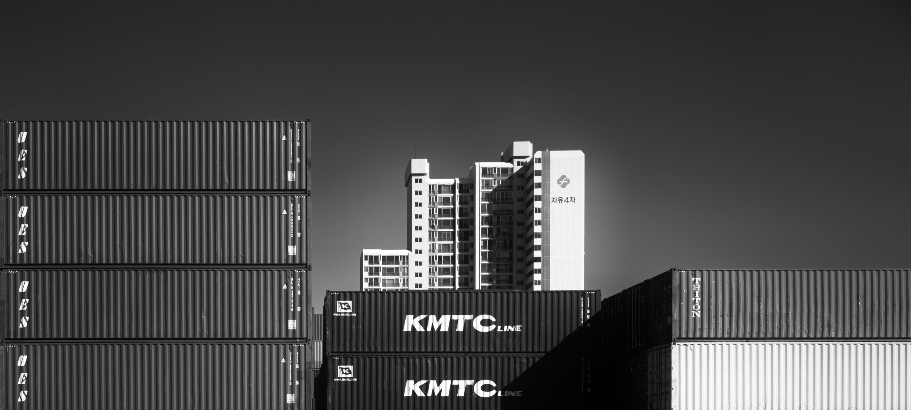

흐르는 도시
FLUID SCAPE
현재 전시

흐르는 도시,
머무는 시간
도시와 나 사이의 거리
도시와 나 사이에는 언제나 보이지 않는 거리가 있었다. 거리를 좁히기 위해 도시를 오래 바라보고, 이해하려 애썼다. 건축을 전공하며 공간과 구조를 바라보는 법을 배웠고, 그 방식이 세상을 읽는 하나의 틀이 되었다. 사진은 단순한 기록이 아니라, 건축을 통해 형성된 시선을 다른 방식으로 이어가려는 시도이자, 건축을 이해하기 위한 도구에 가까웠다. 건축잡지사에서 사진기자로 일하면서, 시간 속에서 드러나는 미묘한 변화들을 따라가는 일에 익숙해졌다. 그리고 건축을 하나의 형태로 보기보다, 도시 속에서 어떤 자리에 놓이는지, 어떤 맥락을 형성하는지가 더 깊이 다가왔다.
잡지사의 요청이나 건축가의 의뢰, 출판사의 필요에 따라 사진을 찍는 일은 언제나 정해진 방향과 주어진 조건 속에서 이뤄졌다. 하지만 그런 제한 속에서도 나만의 방식으로 세상을 바라보려 했다. 직업적 요구와 개인적인 창작 욕구 사이의 모호한 경계 속에서도, 촬영 순간만큼은 정해진 목적보다 즉각적이고 직관적인 시각 반응에 집중했다. 피사체가 요구하는 구도에 따르면서도, 그 안에서 내가 진정으로 보고 싶은 것을 끊임없이 질문했고, 때로는 설명할 수 없는 이끌림에 셔터를 누르기도 했다. 그렇게 예상치 못한 장면들 속에서, 건축이 주변과 자연스럽게 어우러지는 순간들을 발견했고, 도시 공간이 만들어내는 리듬과 감정을 천천히 느끼기 시작했다.
‘한 사람의 사진가로서, 나는 부산을 어떻게 바라볼 것인가?’
이 질문이 이번 프로젝트의 시작점이 되었다. 단순히 도시를 기록하는 것을 넘어, 그 안에 감정과 태도를 어떻게 담아낼 수 있을지 고민하게 되었다. 프로젝트를 통해 내 시선이 분명히 드러나길 바랐고, 익숙한 작업 방식을 벗어나 새로운 시도를 해보고 싶은 마음도 있었다. 하지만 익숙하지 않은 시도에 대한 불안감 또한 떨쳐낼 수 없었다. 도시라는 거대한 대상 앞에서, 사진가로서의 나의 시선이 어디까지 의미를 가질 수 있을지 자문하기도 했다. 결국 사진은 대상을 바라보는 사람의 감정과 반응을 고스란히 담아낸다. 완전히 객관적인 사진은 애초에 존재하지 않기 때문이다.
내가 선택한 방식은 익숙한 장면을 낯설게 바라보는 것이었다. 사진을 통해 나의 감각을 드러낸다는 것은 단지 무엇을 찍느냐 보다, 어떻게 보고, 어디에 시선을 머무를 것인가에 대한 선택에서 시작된다고 생각했다. 발터 벤야민은 사진을 단순한 현실의 복제가 아니라, 기계를 통해 익숙한 장면을 새로운 시각으로 바라보게 하는 매체라고 했다. 빅토르 시클롭스키 또한 익숙한 대상을 낯설게 표현함으로써 우리가 그것을 새롭게 인식하게 만드는 과정을 예술의 역할로 보며, 이를 ‘낯설게 하기 defamiliarization’로 정의했다. 나 역시 부산이라는 도시를 감상적이거나 서정적인 시선보다는, 조금은 의도적으로 낯선 시각에서 바라보고 싶었다. 해운대 해변이나 광안대교처럼 익숙한 해안 전경 대신, 콘크리트 방파제와 그 너머로 보이는 아파트를 촬영했고, 부산항에서는 배나 컨테이너 자체가 아닌, 겹겹이 쌓인 컨테이너 사이로 보이는 아파트를 통해 산업과 주거가 맞물려 있는 도시의 구조를 드러내고자 했다.
무심히 지나치는 장면들 속에서, 나는 부산이라는 도시의 구조적 특징과 변화의 결을 다시 바라보고 싶었다. 그 익숙한 풍경을 다르게 마주하는 방식 속에서, 사진은 내 감각이 머무는 곳과 시선이 닿지 않던 지점을 새롭게 연결해주었다.
부산은 끊임없이 변하고 있다. 재개발이라는 이름 아래 오래된 골목과 주택들이 사라지고, 그 자리를 새로운 건축이 채운다. 부산에 살면서 공사 현장이 보이지 않았던 시절이 있었던가 싶을 정도다. 나는 지도 위의 지점을 사진으로 옮겨 담는 것이 아니라, 직접 걸으며 도시를 확인하고 싶었다. 늘 무심히 지나쳤던 골목에 한 걸음 들어가 보았고, 그 안에서 예상치 못한 풍경과 마주하기도 했다. 낯익은 도시는 여전히 ‘낯선 풍경’을 품고 있었다. 부산의 대표적인 이미지를 떠올리면, 가장 먼저 부산역을 나와 마주하는 산복도로가 떠오른다. 경사진 길을 따라 층층이 쌓인 집들은 제한된 공간을 최대한 활용한 도시의 조형적 특징을 보여준다. 도시가 형성된 과정과 그 속에서 살아가는 사람들의 삶이 응축된 풍경이다. 이곳에서 바라본 부산은 과거와 현재가 겹쳐진 공간이며, 재개발과 함께 빠르게 변해가고 있다.
그런 장면을 어떻게 바라보고, 어떤 감각으로 담아낼 것인가는 결국 나의 촬영 방식에도 영향을 주었다. 나는 이러한 시선을 담아 내기 위해 대형 카메라와 흑백사진을 선택했다. 대형카메라는 프레임을 구성하는데 더 많은 시간과 집중을 요구했고, 그 덕분에 나는 도시를 빠르게 소비하지 않고, 천천히 바라볼 수 있었다. 셔터를 누르기 전의 기다림 속에서 도시의 구조는 조금 더 분명해졌고, 익숙했던 장면들은 점점 낯설고 새로운 풍경으로 다가왔다. 흑백이라는 제한된 색채 안에서 도시의 질감과 형태는 오히려 더 선명하게 드러났고, 색이 사라진 자리는 내가 바라본 시선과 감각의 흐름으로 채워졌다. 무엇보다 흑백 사진은 특정 장소의 고유한 인상을 흐림으로써, 보는 이가 ‘여기가 어딘지’보다 ‘무엇을 보고 있는지’에 먼저 반응할 수 있도록 만든다. 나는 이 사진들이 부산의 특정한 동네나 지명을 기록하는 것이 아니라, 도시를 바라보는 방식에 대한 하나의 감각적 제안으로 읽히기를 바랐다.
하지만 이 사진들이 단순히 과거를 보존하거나, 변화를 비판하는 기록으로만 읽히기를 바라지는 않는다. 이 사진들이 부산이라는 도시를 살아가는 우리의 기억과 경험을 조용히 환기시키는 매개가 되기를 바란다. 도시는 끊임없이 변하지만, 그 변화의 한 순간을 붙잡는 사진은 시간을 바라보는 또 다른 감각의 틀이 된다. 우리는 그 틀 안에서, 무엇을 보고 어떻게 기억할 것인지 스스로 묻게 된다. 결국 도시는 사라질지라도, 그 자리에 남은 기억은 도시가 어떤 방향으로 변해야 하는지를 묻는 장면으로 남을 것이다.
전시 개요, 이인미